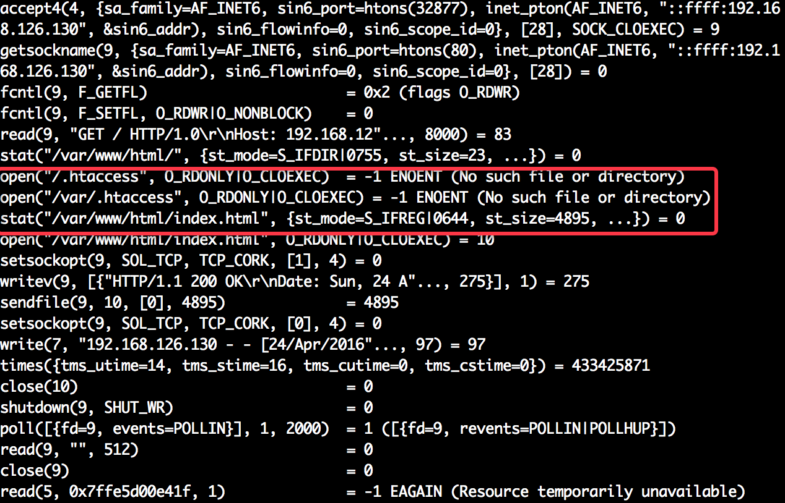
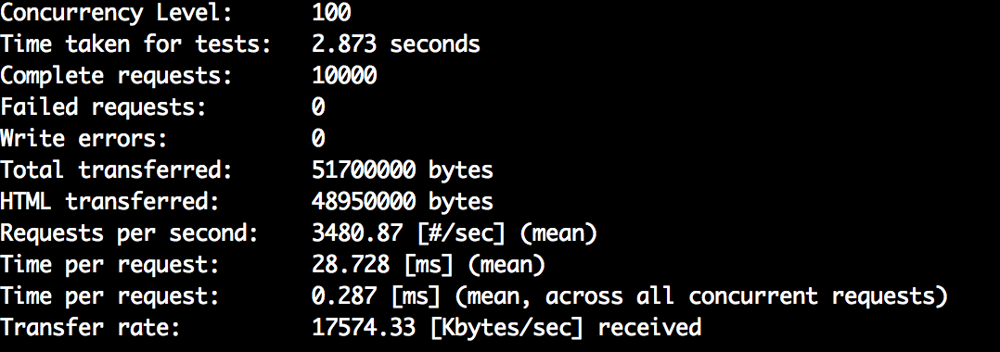
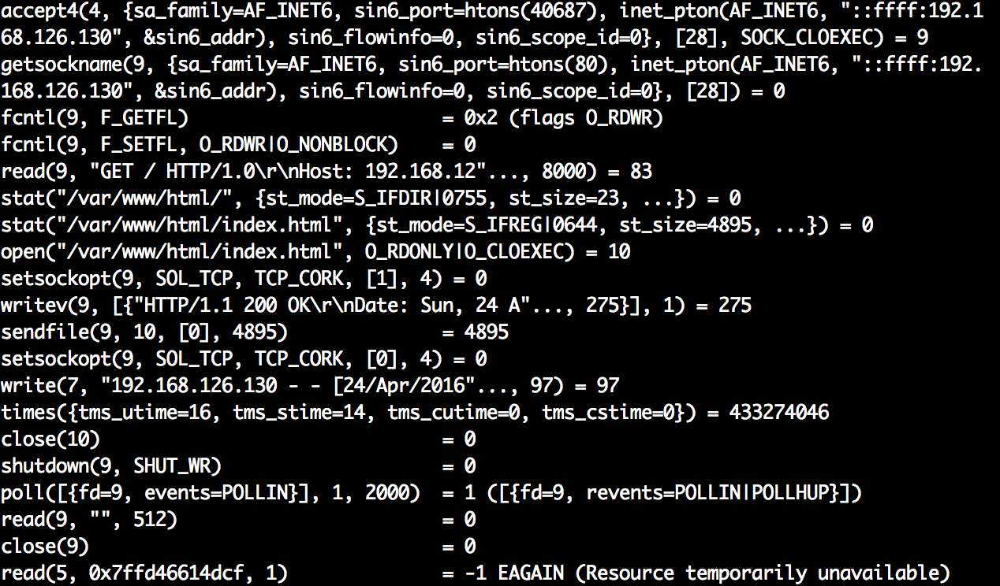
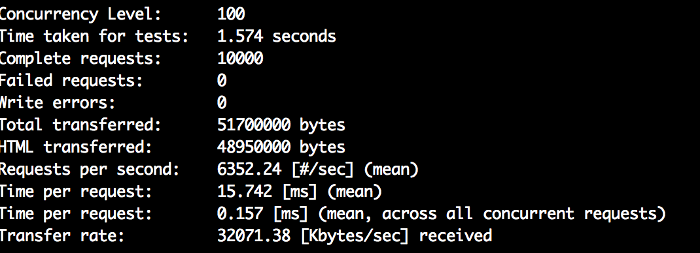
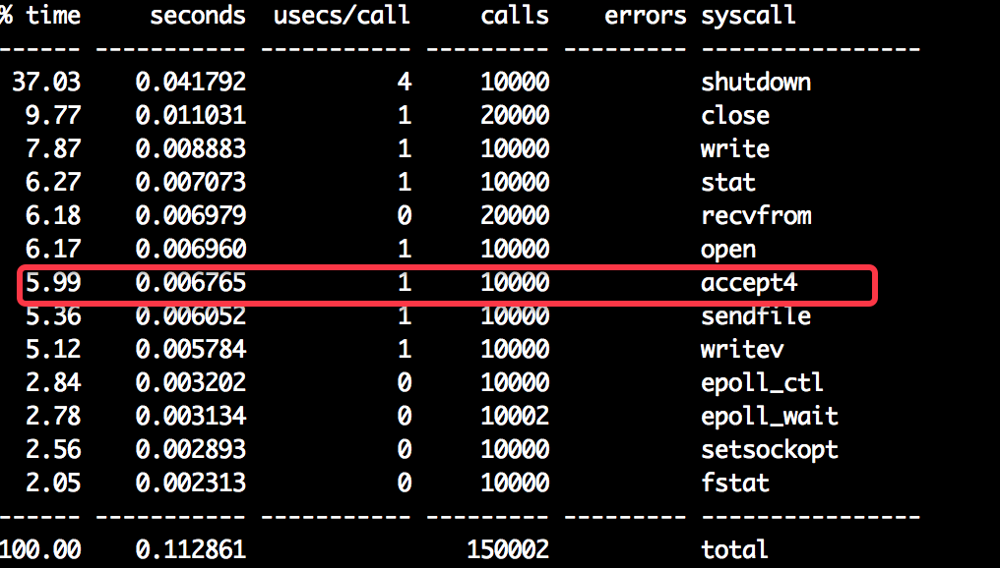
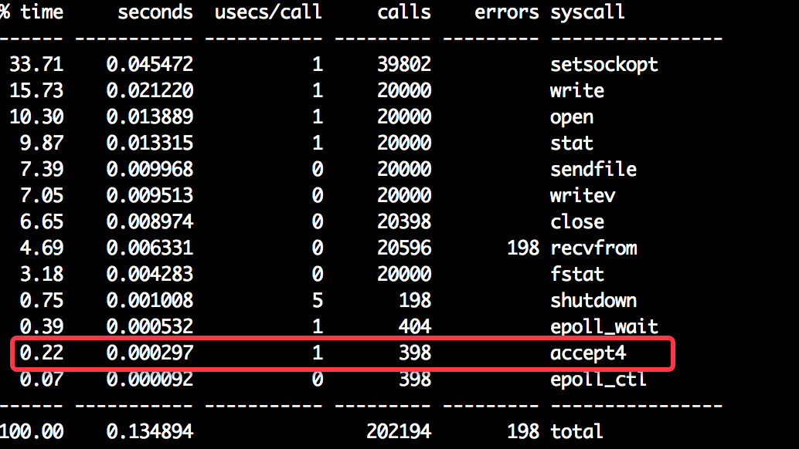
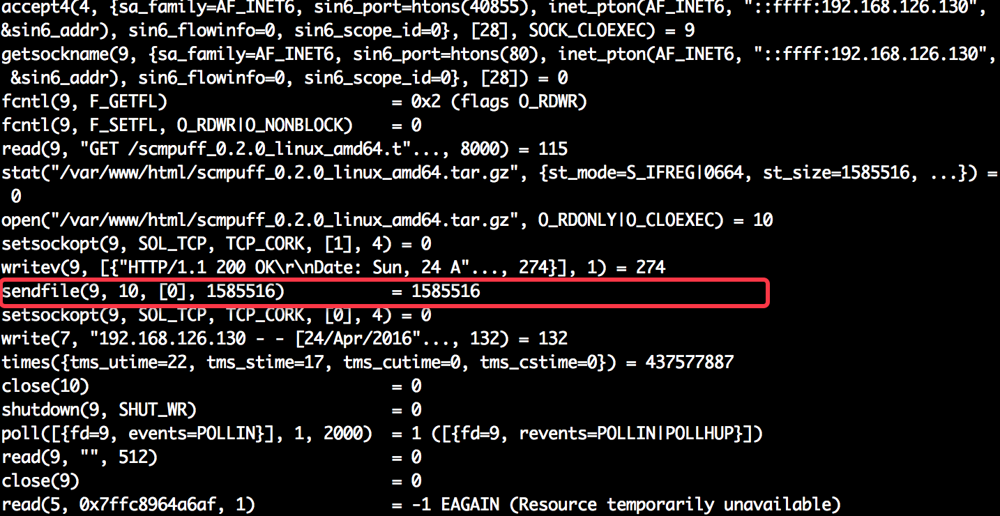
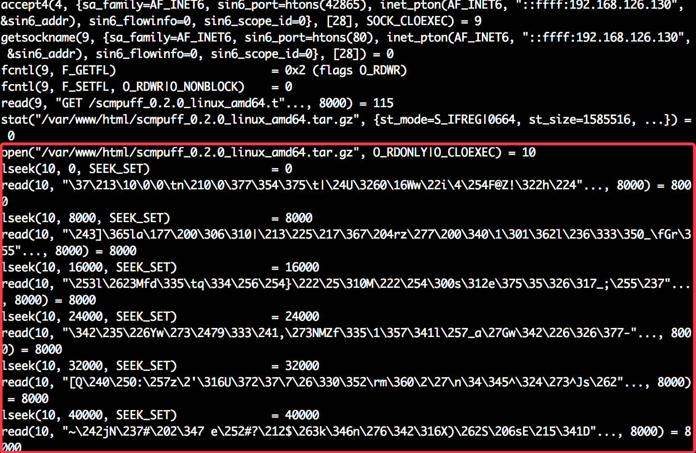

本篇将通过apache的配置项，结合实际应用，直观感受这些配置参数对吞吐量的影响。
系统调用
进程有两种运行模式：用户态和内核态，进程在这两种模式中切换就需要一定的开销。 进程通常运行在用户态，可以利用内存和CPU完成一些任务；而当进程需要对硬件外设进行操作时，就需要切换到内核态；等内核态任务完成后再切换回用户态。
为何要分两种运行模式呢？主要是为了提高底层的安全，简化上层开发。不用担心用户的非法操作对底层硬件产生影响，因为非法操作在系统调用这一层被屏蔽了。
Apache中通过.htaccess文件来为访问目录下各个子目录进行局部配置，但是也会产生一定的系统开销。 可以将httpd.conf中AllowOverrid设置为All,
<Directory />
AllowOverride all
Require all denied
</Directory>
通过strace命令跟踪某一子进程，获得某次请求的系统调用如下： 
此时，通过ab压测，结果如下： 
然后我们关闭.htacess功能，重启apache，再次使用strace跟踪，结果如下所示： 
ab压测结果如下：  比较两次压测结果，可见系统调用对服务器的吞吐量影响还是非常明显的。
持久连接/长连接
持久连接（Keep-Alive）即为长连接，即对同一次连接的多次复用（连续发送多份数据）。而对应的短连接则是建立连接并发送完数据后断开，下次再建连接、发送、断开，如此反复。
HTTP长连接需要浏览器和服务器的共同协作，缺一不可。因为TCP连接是双向通信的，双方都可以主动关闭，任何一方断开都会引起另一方的关闭。对于长连接而言，关键的一点就是长连接的时间设置，在运行过程中，以时间段的为准，时间段的一方先断开连接。不同浏览器的长连接超时时间也不一致。
在Apache中可以通过以下方法关闭：
KeepAlive Off
同样可以设置长连接的超时时间：
KeepAliveTimeout 30
下面通过在Nginx服务器下的压测，通过ab启动长连接模拟发起支持长连接的HTTP请求。通过strace统计得出结果
不使用长连接： 
使用长连接： 
可见，长连接对吞吐量的提高有显著的改善，accept的调用耗时、调用次数都有所降低。
长连接的超时对web服务器的性能也有影响，并不是超时时间越长越好。如果客户端没有任何请求，但超时时间还没到，服务器不得不维持空闲着的连接（对于Apache，将维持大量空闲进程，影响服务器性能 ）。
sendfile
对于静态文件的请求（图片、样式表等），在请求过程中，磁盘文件数据先经过内核缓冲区，到用户内存空间，然后静态文件又会原封不动的送到网卡对应的内核缓冲区。
sendfile的目的就在于内核希望请求的处理尽量在内核完成，减少内核态的切换，以及用户态数据的开销。
Apache默认是开启sendfile(sendfile on)的。通过对静态文件的访问，用strace跟踪如下图： 
上述截图中，9代表的是磁盘的文件描述符；10代表的静态文件的文件描述符。可见直接通过sendfile对文件发送，而不经过用户内存空间。该方式下ab压测（用户并发数100， 总请求数1000， 文件大小1.5M）,吞吐量为1440.44 req/s。
而关闭sendfile，跟踪如下图： 
好吧，截图中全是read，lseek函数，吞吐量为437.32 req/s(不忍直视)。但是sendfile对小文件而言发挥的作用应该不大，因为此时拷贝耗时已经不是主要因素了，所以还是需要结合具体业务来选择。
其实要达到这种效果，还需要设置(EnableMMAP off).内存映射能够直接将磁盘文件映射到内存，以提高磁盘I/O的性能。使得访问文件能像访问内存一样自由，但是也是有代价的，对于共享型内存映射，如果一个文件被很多进程映射，那每次修改同步将有一定的时间开销。
参考阅读
《构建高性能web站点》